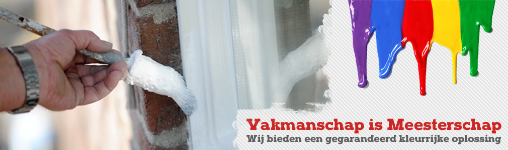
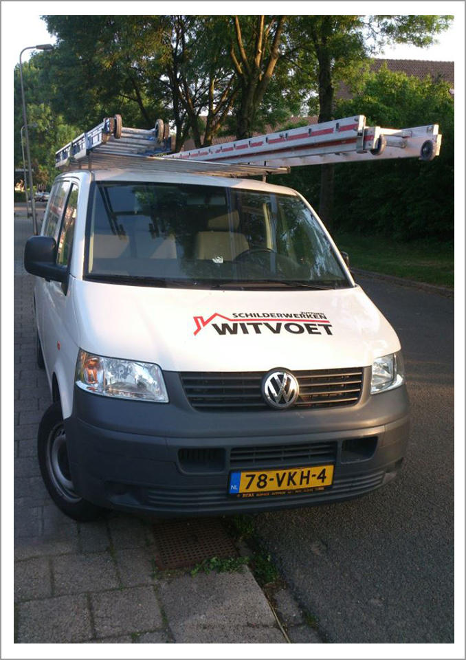
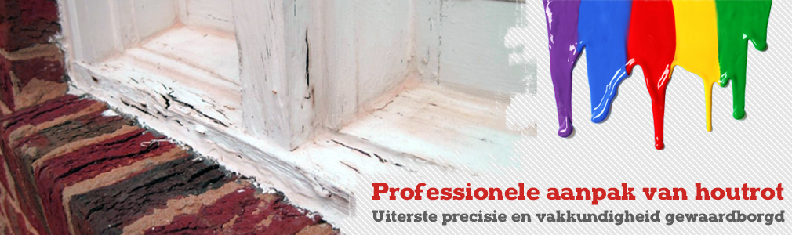

Schilderwerk binnen en buiten
Kozijnen, deuren, gevels, plafonds en muren. Goed voorwerk, strakke lijnen en een nette afwerking. Het werk is klaar binnen de tijd die we samen afspreken.
Schilder in Zutphen
Kozijnen, gevel of woonkamer: Witvoet schildert binnen en buiten, pakt houtrot vakkundig aan en denkt graag met u mee over kleur.
5 sterren op Google, uit 2 reviews

Vakmanschap is meesterschap. Van een enkel kozijn tot het hele huis, binnen en buiten.

Kozijnen, deuren, gevels, plafonds en muren. Goed voorwerk, strakke lijnen en een nette afwerking. Het werk is klaar binnen de tijd die we samen afspreken.

Bladdert de verf van uw vensterbank of kozijn en voelt het hout zacht aan? Dan is het tijd. Rot hout wordt professioneel en met precisie hersteld, zodat uw schilderwerk weer een goede basis heeft.
Twijfelt u tussen gebroken wit en net iets warmer? Wij geven u graag kleuradvies, zodat u vooraf weet hoe het wordt.
En ook: een nieuw raam plaatsen, bijvoorbeeld in de keuken. Vraag gerust wat er mogelijk is.
Een kleine aanpassing kan al een groots effect hebben.
Een nieuwe kleur op de voordeur, opgeknapte kozijnen: soms is dat al genoeg om uw huis er weer fris uit te laten zien.
5 sterren op Google, uit 2 reviews
"Zeer vakkundige schilder, het gevraagde werk was binnen de afgesproken tijd gedaan en het ziet er prima uit.
Ook het plaatsten van het nieuwe keukenraam ziet er perfect uit.
Van het zomer maar eens laten komen voor de buitenkant van ons huis.
Bedankt Gradie!!"
Bel voor een afspraak, een prijsopgave of advies. Liever schrijven? Mail of laat hiernaast een bericht achter.
Bel 06 51810634